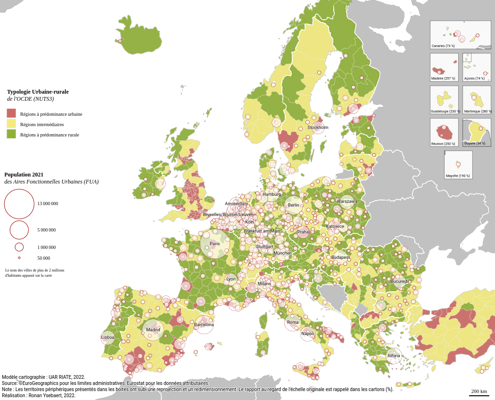

<a href="https://magrit.cnrs.fr" target="_blank"> </a> ## Introduction au logiciel ## de cartographie thématique <a href="https://magrit.cnrs.fr" target="_blank">Magrit</a> <br> 16 mars 2023 - Campus Condorcet (Aubervilliers)
## Magrit... pour faire quoi ? -- <h3 style="display: none;">Fonctionnalités cartographiques</h3> <img src="images/magrit-functions.png"> -- <h3 style="display: none;">Chaîne de traitement cartographique</h3> -- <h3 style="display: none;">Exemples de cartes</h3>  <img src="images/carte-cinema-pot.png" style="width: 400px; float: left;">
## Magrit - ses points forts <div class="light-small"> - **Simplicité d'utilisation** (application Web sans installation nécessaire, préparation d'une carte en 2 minutes) - **Différents formats de données en entrée** (CSV, ESRI Shapefile, GeoJSON, GML, etc.) - **Personnalisation des cartes** (habillage, légende, etc.) - Nombreuses **projections cartographiques** supportées - **Export SVG** permettant de retoucher les cartes produites (Inkscape, Illustrator, etc.) - Sauvegarde d'un fichier projet permettant de reprendre le travail ultérieurement </div> -- ## Magrit - ses limites <div class="light-small"> - Pas un SIG (pas de géotraitements - pas ou de modifications des données) - Pas d'analyses statistiques multivariées (régression, etc.) - Pas de digitalisation - Nécessité d'utiliser de l'information géographique (données spatialisées) → Pas d'utilisation de fond de carte .svg / .ai </div>
## D√©mo <p class="ta-left"><b>Donn√©es</b></p> - [D√©coupage des quartiers de Paris (GeoJSON)](data/demo/quartier_paris.geojson) - [Donn√©es de Population (CSV)](data/demo/quartier_paris_pop.csv) <br> <p class="ta-left"><b>Objectif</b></p> - Importer et joindre les donn√©es - Calculer un nouveau champ - Combiner plusieurs repr√©sentations - Exporter la carte <aside class="notes"> üìù <ul> <li>Ajout geojson</li> <li>Choix Lambert 93</li> <li>Ajout CSV donn√©es + jointures</li> <li>Repr√©sentation Symbols proportionnels sur champ population 2012</li> <li>Calcul champ densit√©_pop_2012</li> <li>Repr√©sentation choropl√®the sur densit√© pop 2012</li> <li>Modification de la l√©gende pour layout horizontal</li> <li>Repr√©sentation anamorphose, puis la cacher</li> <li>Ajout d'√©l√©ments d'habillage : √©chelle et nord</li> <li>Ajout d'un titre</li> <li>Export en SVG</li> <li>Montrer export en geojson du r√©sultat de l'anamorphose ?</li> </ul> </aside>
## Exercice 1 - **Objectifs** : Porter une analyse critique sur une carte existante puis chercher à la reproduire avec Magrit <img src="images/carte_uefa.png" style="width: 50%"> -- <img src="images/carte_uefa.png" style="width: 690px"> -- <div class="ta-left"><p><b>Source de données pour les fonds de carte à l'échelle du globe</b> :</p> - http://naturalearthdata.com/ (trouver le bon fond de carte : niveau de détails, présence des 50 pays concernés par le jeu de données, etc.) <br><br> <p><b>Données des victoires par pays</b> :</p> - [data_uefa.csv](data/ex1/data_uefa.csv) <div style="width: 50%;"><small>Source: <a href="https://fr.wikipedia.org/wiki/Ligue_des_champions_de_l%27UEFA">Wikipedia - Ligue des champions de l'UEFA</a></small></div> </div>
## Exercice 2 <div class="light-small"> - **Objectif thématique** : Faire une carte de l'évolution 1968-2019 de la population de France Métropolitaine - **Objectifs techniques** : Réaliser une carte choroplèthe, choisir une méthode de discrétisation et une palette de couleurs adaptée. - **Données** : - Fond de carte des départements (disponible dans Magrit) - Données de population par département (source: INSEE) - https://www.insee.fr/fr/statistiques/1893204 </div> -- ### Étapes à suivre <div class="light-small"> - **Étape 1** : Calculer la variable à représenter à partir du tableur de l'INSEE et exporter la table en CSV - **Étape 2** : Importer les données CSV dans Magrit - **Étape 3** : Importer le fond de carte des départements de France Métropolitaine dans Magrit - **Étape 4** : Faire les bons choix de sémiologie et d'habillage jusqu'à l'obtention d'une carte finalisée </div>
## Exercice 3 <div class="light-small"> - **Objectif thématique** : Analyser la structure de l'emploi dans la région Hauts-de-France en 2014. - **Objectifs techniques** : Combiner plusieurs modes de représentation sur une même carte et mettre en œuvre des représentation cartographiques avancées - **Données** : - [Fond de carte des communes de la région Hauts-de-France](data/ex3/Communes_Region.zip) (source : IGN) - [Fond de carte des départements de la région Hauts-de-France](data/ex3/departements.zip) (source : IGN) - [Structure de la population active de 25 à 54 ans par commune](data/ex3/) (source : INSEE) <small><i>NB : les données ont été mises en forme avec R pour être importées dans Magrit (extrait des communes des Hauts-de-France et calcul des ratios et de la catégorie dominante)</i></small> </div> -- <div class="light-small"> ### Étapes à suivre - **Étape 1** : Importer toutes les données dans Magrit et réaliser la jointure - **Étape 2** : Choisir la ou les représentations appropriées - **Étape 3** : Habiller la carte _(choix d'un titre, modification des légendes, ajout de labels, ajout du nom de l'auteur et des sources, d'un logo, etc.)_ - **Étape 4** : Exporter la carte _(SVG ou PNG)_ </div> -- ### Exemple de résultat <img src="./images/hauts-de-france-pop-emploi.png" style="width: 800px; background-color: white;">
## Conseils pour une utilisation avancée de Magrit
## Options pour l'habillage de la carte -- ### Ajouter une ombre à une couche -- -- ### Aligner précisément les éléments d'habillage -- <h3 style="display:none;">Aligner précisément les éléments d'habillage (suite)</h3> -- <h3 style="display:none;">Aligner précisément les éléments d'habillage (suite)</h3> Après activation de la fonctionnalité, des guides rouges apparaissent lors du déplacement des éléments pour guider leur alignement les uns par rapport aux autres (*"à la Powerpoint"*) <img src="images/alignement0.png" style="background-color: white; width: 130px;"> -- <h3 style="display:none;">Aligner précisément les éléments d'habillage (suite)</h3> <img src="images/alignement2.png"> -- <h3 style="display:none;">Aligner précisément les éléments d'habillage (suite)</h3> -- ### Ajouter un contour autour du texte <small><em>Pour améliorer la lisibilité de certains textes<br>(sur un fond sombre, lors du chevauchement de certaines portions du fond de carte, etc.).</em></small> <div class="fragment"> <img src="images/ombre_texte_export.png" style="float:left;width: 49%;"> <img src="images/ombre_texte_export2.png" style="float: right;width: 49%;"> </div> <small class="fragment"><em>Disponible sur l'élément "titre", sur l'élément "annotation de texte" et sur les couches de labels.</em></small>
## Ajouter un carton de localisation -- <h3 style="display:none;">Ajouter un carton de localisation (suite)</h3> -- <h3 style="display:none;">Ajouter un carton de localisation (suite)</h3> <img src="images/carton.gif">
## Options pour la personnalisation des éléments de légende -- <h3 style="display:none;">Options pour la personnalisation des éléments de légende (suite)</h3> **Options disponibles :** - Arrondir ou choisir les valeurs affichées - Choisir la disposition (horizontale-verticale / symboles encastrés ou non) - Personnaliser le texte affiché - ... -- <h3 style="display:none;">Options pour la personnalisation des éléments de légende (suite)</h3> **Pourquoi se limiter aux possibilités offertes par les options de la légende ?** **Il est par exemple possible d'utiliser une annotation de texte avec une police personnalisée** <img src="images/legende_custom2.png" style="width: 30%;">
## Plus d'astuces ?
## Installer Magrit ? - Pour l'utiliser sans internet - Pour traiter des donn√©es sensibles en local - Pour b√©n√©ficier de meilleures performances - L'installer sur un *Raspberry Pi* pour enseigner la cartographie √† une classe sans acc√®s au Web ? <div class="fragment"> <img src="images/Raspberry_Pi_4_Model_B_-_Side.jpg" style="width: 300px; float:left;"> </div> -- ### Installer Magrit avec Docker <img src="images/DOCKER_LOGO_CC.png" style="width: 200px;"> - **Compatibilit√©** : Tous les OS qui supportent Docker (Windows, Mac, Linux, etc.) - **Pr√©requis** : Docker install√© sur votre machine -- ### Installer Magrit avec Docker (suite) - **En ligne de commande (option 1)** : <br> - Lors de la premi√®re utilisation (t√©l√©chargement de l'image et d√©marrage) : docker run -d -p "9999:9999" --name magrit magrit/magrit - Pour l'arr√™ter : docker stop magrit - Pour le red√©marrer : docker start magrit -- ### Installer Magrit avec Docker (suite) - **En utilisant le GUI Docker Desktop (option 2)** : <img src="images/docker-desktop-ui.png" style="width: 800px"/> -- <img src="images/docker-desktop-search-magrit.png" style="width: 800px"/> <small>*Chercher "Magrit" dans la barre de recherche, s√©lectionner l'image __magrit/magrit__ et cliquer sur __Pull__*.</small> -- <small>*Dans le menu __Images__, cliquer sur le bouton* ‚ñ∂Ô∏è *de l'image __magrit/magrit__*.</small> -- <small>*Renseigner le port sur lequel l'application doit √™tre expos√©e (par exemple 9999)*.</small> -- ### Acc√©der √† Magrit... <br><br> üòé **_Simplement en ouvrant votre navigateur √† l'adresse http://localhost:9999/_** <br> -- *Il est ensuite possible de stopper ou de red√©marrer l'application depuis le menu __Containers__ de Docker Desktop.*
## Pour résumer ... - Une application de cartographie thématique en ligne, gratuite et libre - Capable et polyvalente - Maintenue (en ligne depuis 2017) et améliorée régulièrement
#### Merci pour votre attention ! <br/> <a href="https://magrit.cnrs.fr" target="_blank"> </a> üêõ Rapport de bug, suggestions : https://github.com/riatelab/magrit/issues <br> üìß Contact : matthieu.viry@cnrs.fr